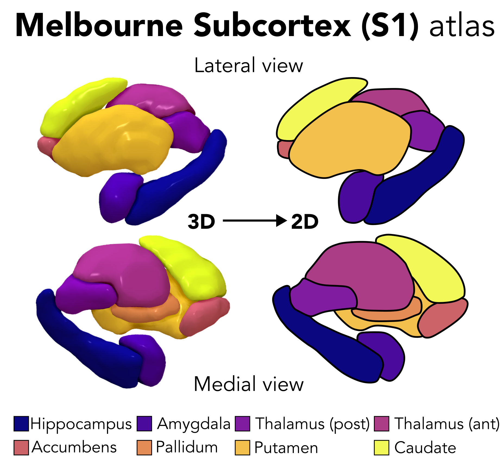
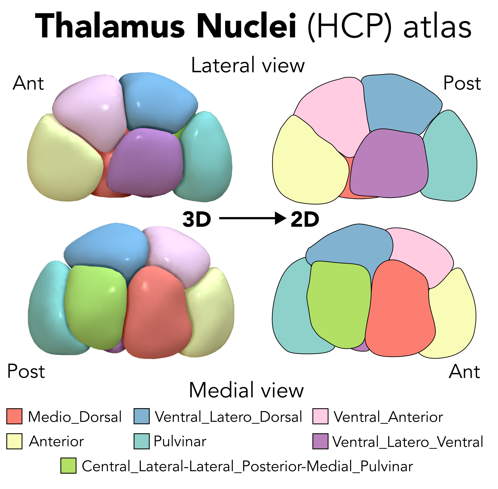

Information about the included subcortical atlases
aseg (FreeSurfer)
Reference: Fischl et al. Neuron (2002).
Atlas name keyword: aseg
Region names: accumbens, amygdala, caudate, hippocampus, pallidum, putamen, thalamus

Melbourne Subcortex Atlas (S1)
Reference: Tian et al. Nature Neuroscience (2020).
Atlas name keyword: Melbourne_S1
Region names: accumbens, amygdala, caudate, hippocampus, pallidum, putamen, thalamus_anterior, thalamus_posterior

Melbourne Subcortex Atlas (S2)
Reference: Tian et al. Nature Neuroscience (2020).
Atlas name keyword: Melbourne_S2
Region names: accumbens_core, accumbens_shell, amygdala_lateral, amygdala_medial, caudate_anterior, caudate_posterior, hippocampus_anterior, hippocampus_posterior, pallidum_anterior, pallidum_posterior, putamen_anterior, putamen_posterior, thalamus_DA, thalamus_DP, thalamus_VA, thalamus_VP

Melbourne Subcortex Atlas (S3)
Reference: Tian et al. Nature Neuroscience (2020).
Atlas name keyword: Melbourne_S3
Region names: accumbens_core, accumbens_shell, amygdala_lateral, amygdala_medial, caudate_anterior, caudate_posterior, hippocampus_anterior, hippocampus_posterior, pallidum_anterior, pallidum_posterior, putamen_anterior, putamen_posterior, thalamus_DA, thalamus_DP, thalamus_VA, thalamus_VP

Melbourne Subcortex Atlas (S4)
Reference: Tian et al. Nature Neuroscience (2020).
Atlas name keyword: Melbourne_S4
Region names: accumbens_core, accumbens_shell, amygdala_lateral, amygdala_medial, caudate_anterior, caudate_posterior, hippocampus_anterior, hippocampus_posterior, pallidum_anterior, pallidum_posterior, putamen_anterior, putamen_posterior, thalamus_DA, thalamus_DP, thalamus_VA, thalamus_VP

AICHA subcortical atlas
Reference: Joliot et al. J Neurosci Methods (2015).
Atlas name keyword: AICHA
Region names: Amygdala-1, Caudate-1, Caudate-2, Caudate-3, Caudate-4, Caudate-5, Caudate-6, Caudate-7, Pallidum-1, Putamen-2, Putamen-3, Thalamus-1, Thalamus-2, Thalamus-3, Thalamus-4, Thalamus-5, Thalamus-6, Thalamus-7, Thalamus-8, Thalamus-9

Brainnetome subcortical atlas
Reference: Fan et al. Cerebral Cortex (2016).
Atlas name keyword: Brainnetome
Region names: GP, NAC, Otha, PPtha, Stha, cHipp, cTtha, dCa, dlPu, lAmyg, lPFtha, mAmyg, mPFtha, mPMtha, rHipp, rTtha, vCa, vmPu

Thalamus Nuclei (HCP) atlas
Reference: Najdenovska et al. Scientific Data (2018).
Atlas name keyword: Thalamus_Nuclei_HCP
Region names: Anterior, Central_Lateral-Lateral_Posterior-Medial_Pulvinar, Medio_Dorsal, Pulvinar, Ventral_Anterior, Ventral_Latero_Dorsal, Ventral_Latero_Ventral

SUIT cerebellar atlas
Reference: Diedrichson. Neuroimage (2006).
Atlas name keyword: SUIT
Region names: I_IV, V, VI, VI_vermis, Crus_I, Crus_II, Crus_II_vermis, VIIb, VIIb_vermis, VIIIa, VIIIa_vermis, VIIIb, VIIIb_vermis, IX, IX_vermis, X, X_vermis